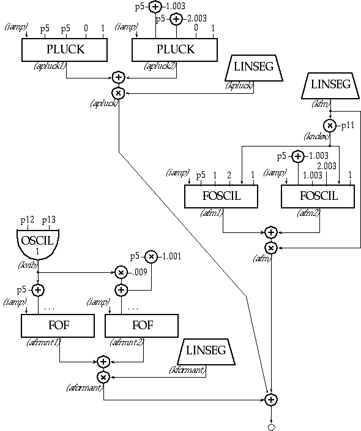

For our final instrument, we will employ three unique synthesis methods: Physical Modeling, Formant-Wave Synthesis, and Non-linear Distortion. Three of Csound's more powerful unit generators - pluck, f
of, and foscil, make this complex task a fairly simple one. The Reference Manual describes these as follows:
ar pluck kamp, kcps, icps, ifn, imeth [, iparm1, iparm2]
pluck simulates the sound of naturally decaying plucked strings by filling a cyclic decay buffer with noise and then smoothing it over time according to one of several methods. The unit is based on the Karplus-Strong algorithm.
ar fof xamp, xfund, xform, koct, kband, kris, kdur kdec,\\ iolaps, ifna, ifnb, itotdur[, iphs[, ifmode]]
fof simulates the sound of the male voice by producing a set of harmonically related partials (a formant region) whose spectral envelope can be controlled over time. It is a special form of granular synthesis, based on the CHANT program from IRCAM by Xavier Rodet et al.
ar foscil xamp, kcps, kcar, kmod, kndx, ifn [, iphs]
foscil is a composite unit which banks two oscillators in a simple FM configuration, wherein the audio-rate output of one (the "modulator") is used to modulate the frequency input of another (the "carrier.")
The plan for our instrument is to have the plucked string attack dissolve into an FM sustain which transforms into a vocal release. The orchestra and score are as follows:
instr 13
; toot13.orc
iamp
=
ampdb(p4)/2
; amplitude, scaled for two sources
ipluckamp
=
p6
; % of total amp, 1=dB amp as in p4
ipluckdur
=
p7*p3
; % of total dur, 1=entire dur of note
ipluckoff
=
p3 - ipluckdur
ifmamp
=
p8
; % of total amp, 1=dB amp as in p4
ifmrise
=
p9*p3
; % of total dur, 1=entire dur of note
ifmdec
=
p10*p3
; % of total duration
ifmoff
=
p3 - (ifmrise + ifmdec)
index
=
p11
ivibdepth
=
p12
ivibrate
=
p13
iformantamp
=
p14
; % of total amp, 1=dB amp as in p4
iformantrise
=
p15*p3
; % of total dur, 1=entire dur of note
iformantdec
=
p3 - iformantrise
kpluck
linseg
ipluckamp, ipluckdur, 0, ipluckoff, 0
apluck1
pluck
iamp, p5, p5, 0, 1
apluck2
pluck
iamp, p5*1.003, p5*1.003, 0, 1
apluck
=
kpluck * (apluck1+apluck2)
kfm
linseg
0, ifmrise, ifmamp, ifmdec, 0, ifmoff, 0
kndx
=
kfm * index
afm1
foscil
iamp, p5, 1, 2, kndx, 1
afm2
foscil
iamp, p5*1.003, 1.003, 2.003, kndx, 1
afm
=
kfm * (afm1+afm2)
kfrmnt
linseg
0, iformantrise, iformantamp, iformantdec, 0
kvib
oscil
ivibdepth, ivibrate, 1
afrmnt1
fof
iamp, p5+kvib, 650, 0, 40, .003, .017, .007, 4, 1, 2, p3
afrmnt2
fof
iamp, (p5*1.001)+kvib*.009, 650, 0, 40, .003, .017, .007, 10, 1, 2, p3
aformnt
=
kfrmnt * (afrmnt1+afrmnt2)
out
apluck + afm + aformnt
endin
; toot13.sco
f1
0
8192
10
1
; sine wave
f2
0
2048
19
.5
1
270
1
; sigmoid rise
;i
st
dr
mp
frq
plkmp
plkdr
fmp
fmris
fmdec
indx
vbdp
vbrt
frmp
fris
i13
0
5
80
200
.8
.3
.7
.2
.35
8
1
5
3
.5
i13
+
8
80
100
.
.4
.7
.35
.35
7
1
6
3
.7
i13
.
13
80
50
.
.3
.7
.2
.4
6
1
4
3
.6

Toot 13: Spectral Fusion